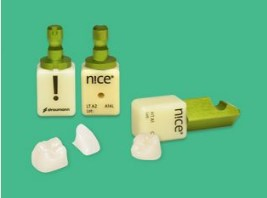
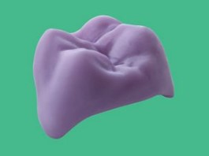
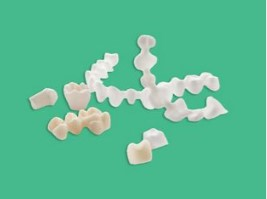
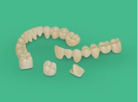
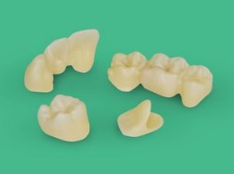
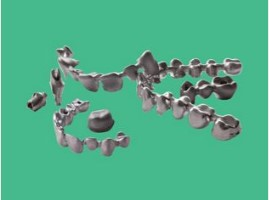
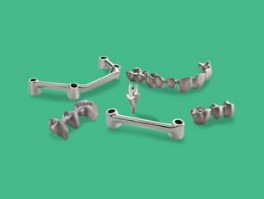
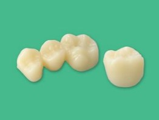
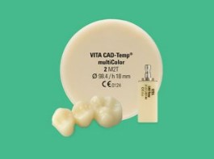
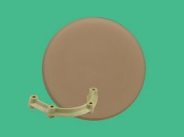

Straumann® n!ce®
High-tech glass-ceramic solution designed for fast, esthetic single-tooth restorations.
More infoIPS e.max® CAD
Lithium-disilicate glass-ceramic used for esthetic CAD/CAM restorations.
More infozerion® LT
High-strength zirconia available in multiple shades, used up to full-arch restorations.
More info3M™ Lava™ Plus
High translucent zirconia for natural-looking full-contour restorations.
More info3M™ Lava™ Esthetic
First zirconia with built-in fluorescence for high-esthetic full-contour cases.
More infozerion® HTML
Zirconia with natural color gradient for up to full-arch full-contour restorations.
More infocoron®
High-quality cobalt-chromium alloy for veneerable screw-retained or cemented restorations up to full-arch.
More infoticon®
High-quality Titanium Grade 4 metal for screw-retained or cemented restorations up to full-arch.
More infopolycon® ae
Strong acrylate polymer for up to full-arch full-contour temporary restorations.
More infoVITA® CAD-Temp
Esthetic polymer for long-term temporary crown and bridge restorations.
More infoJUVORA™ PEEK
Strong and lightweight high-performance polymer indicated for final full-arch restorations.
More info